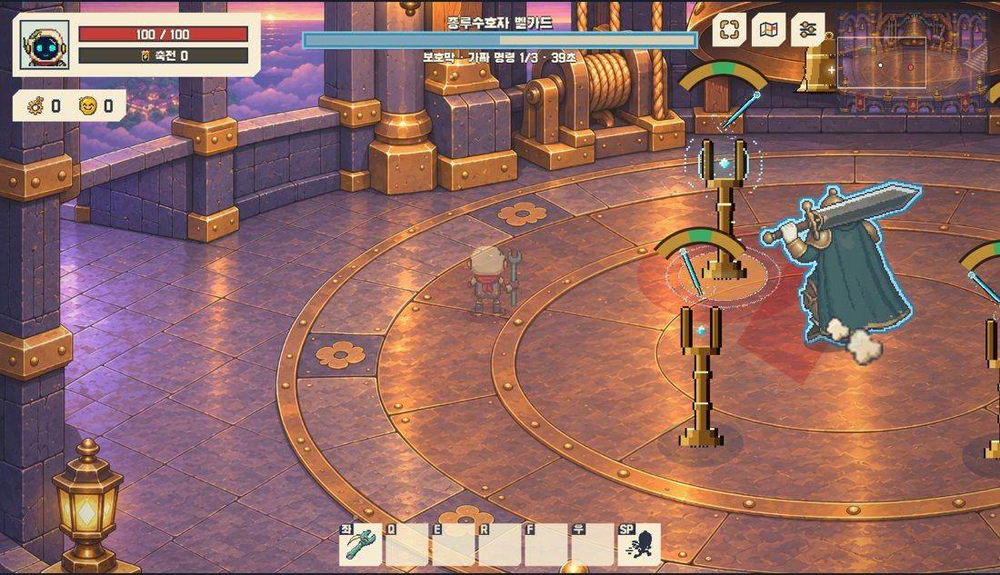
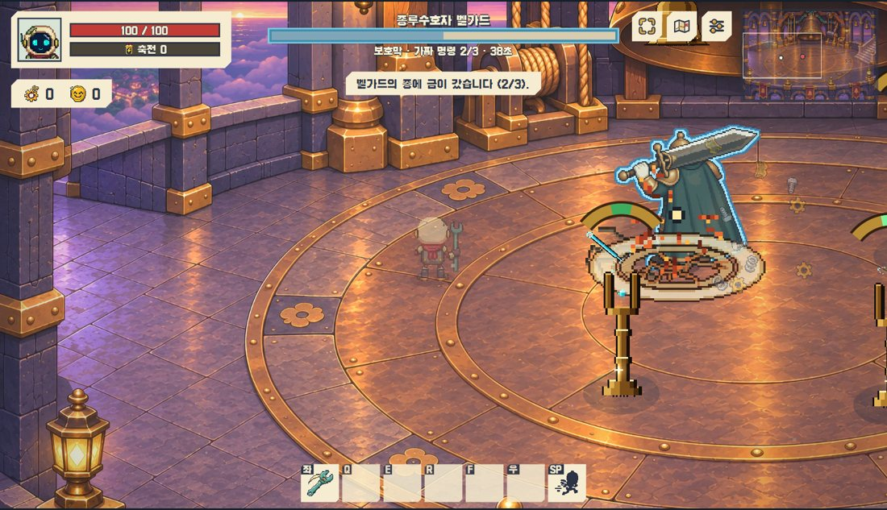
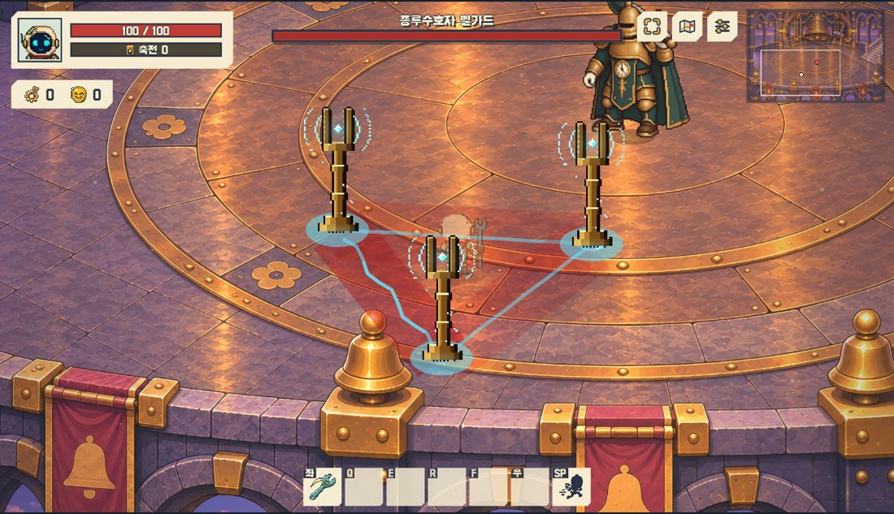
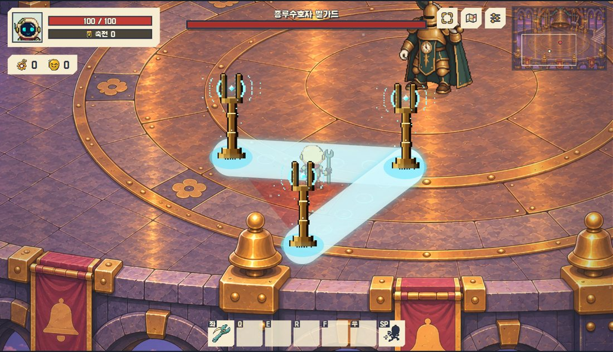
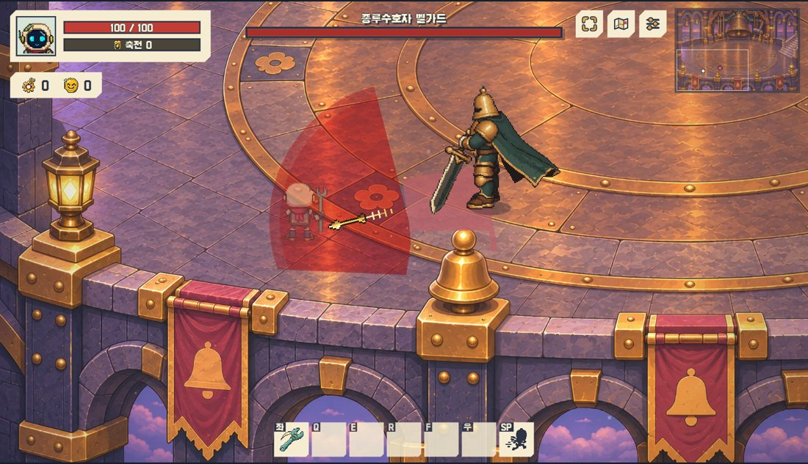
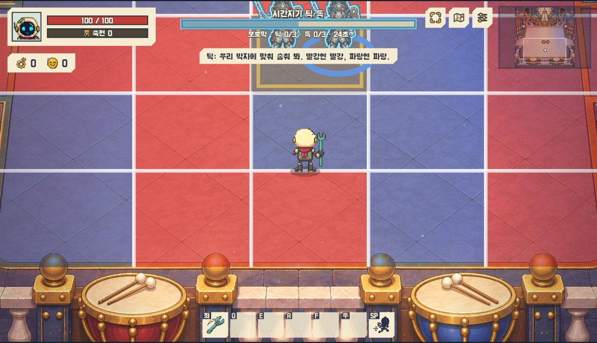
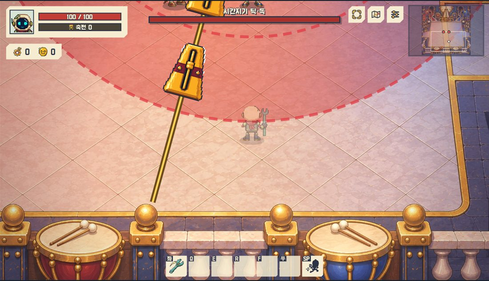

이펙트 (게임 화면 캡처)







캡처에 없는 이펙트: 틱·톡이 반 박자 일찍 공격할 때 머리 위 금빛 반짝임, 2페이즈 큰 메트로놈 동안 던지는 톱니의 반짝임, 음 이탈 때 기둥 흔들림.
소리 버튼을 누르면 게임과 같은 음량으로 한 번 재생됩니다. 오른쪽 '녹음'은 Openverse의 자유 라이선스 녹음에서 고른 같은 소리입니다(같은 음량으로 맞춤). 바꾸고 싶은 것은 번호로 알려 주세요 (예: S3, B12 녹음, E2). 아이폰은 무음 모드를 끄면 들립니다.







캡처에 없는 이펙트: 틱·톡이 반 박자 일찍 공격할 때 머리 위 금빛 반짝임, 2페이즈 큰 메트로놈 동안 던지는 톱니의 반짝임, 음 이탈 때 기둥 흔들림.